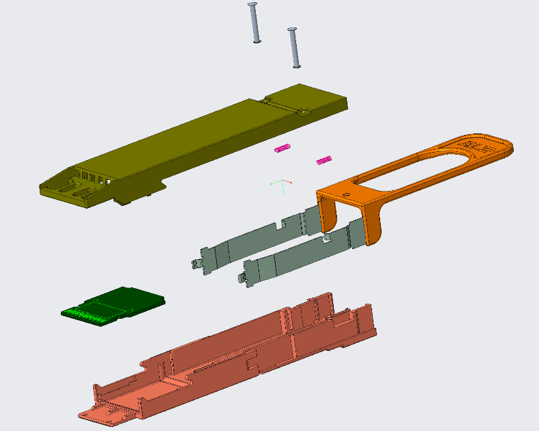
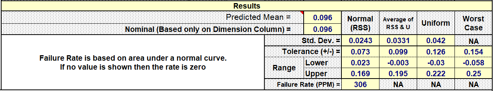

Professional case study · Mechanical engineering internship
From connector concept to manufacturing release.
Selected work across high-speed connector product development, statistical tolerance analysis, precision fixtures, and manufacturing requirements at TE Connectivity.

- Role
- Mechanical Engineering Intern
- Primary tools
- Creo · GD&T · tolerance analysis
- Work areas
- Design · release · fixtures · RFQ
- Highest maturity
- Preliminary engineering release
01 · Product development
Turning an inherited concept into controlled release documentation.
OSFP 224G test module
The project began as a concept that needed a complete mechanical definition before manufacturing could proceed. I developed the Creo assembly and exploded view, prepared a 2D drawing with GD&T, and worked through the documentation and compliance workflow required for preliminary release.
The work connected geometry, assembly intent, drawing control, part/document relationships, and manufacturing handoff rather than stopping at a CAD model.
Manufacturing unblockedCompleted release deliverables gave the shop floor the controlled technical information needed to begin assembly.

02 · Statistical tolerancing
Quantifying three interference and clearance risks.
The analysis compared statistical and worst-case interpretations, then checked the numerical setup through hand calculations before the results were used in DFM/NPI discussions.

Engineering interpretation
The three cases did not carry the same risk. Case 1 and Case 2 produced low statistical failure estimates, while Case 3 exposed a higher probability of losing the intended relationship at the lower end of the distribution.
The case-study metrics use the raw PPM outputs from the analysis tables so each result remains traceable to the underlying calculation.
Independent verificationHand calculations were used to check the statistical stack-up rather than accepting the workbook output without review.
03 · Supporting work
Design, validation, and manufacturing requirements.
Four additional efforts show the breadth of the internship while preserving the maturity each had reached by the final presentation.
Connector design
QSFP 224G organizer
Designed an organizer in Creo by adapting selected legacy components for a new connector direction. Planned follow-on work included casing changes, DFM, and signal-integrity simulation.
Intermediate design stagePhysical validation
Contact-normal-force fixture
Used microscope-assisted assembly and inspection to verify very small detent components, enabling continued assembly of the larger measurement fixture.
Subassembly verifiedRequirements engineering
Packaging automation RFQ
Observed the manual process, spoke with operators, researched automation approaches, and translated the findings into mechanical, sensing, and HMI requirements for vendor quotation.
RFQ / vendor quotation stageFixture redesign
Insertion-force test fixture
Defined modifications to the host-PCB models and base plate and planned clamp integration using Creo, 3D printing, and manufacturing methods.
Work in progress at presentation04 · Engineering takeaways
Product development is a connected system.
The internship linked design intent to tolerances, drawings, release systems, manufacturing readiness, physical assembly, and vendor communication. The strongest lesson was that CAD is only one part of delivering usable hardware.
- Use GD&T and statistical analysis to make assembly risk explicit.
- Verify analytical tools independently when a decision depends on them.
- Carry design intent into controlled drawings and documentation.
- Label ongoing work honestly rather than implying final validation.